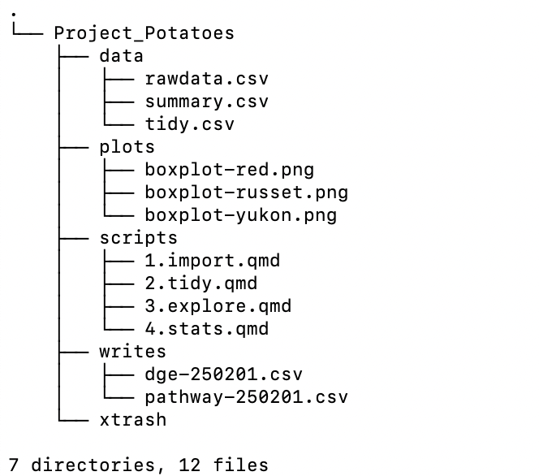
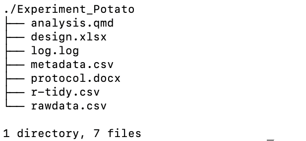

R & RStudio
Welcome to R/RStudio
What is R and RStudio and why is it important to learn and implement in all your data analysis pipelines from simple to complex? The reading below and the the materials covered during this course will answer this very question.
At the end of this lesson you will:
- Describe the purpose of the RStudio Script, Console, Environment, and Plots panes.
- Organize files and directories for a set of analyses as an R project.
- Use the built-in RStudio help interface to search for more information on R functions.
What is R & Why learn it??
The term R is used to refer to the programming language, the environment for statistical computing, and the software that interprets the scripts written using it.
RStudio is currently a very popular way to not only write your R scripts but also to interact with the R software1. To function correctly, RStudio needs R and therefore both need to be installed on your computer.
The RStudio IDE Cheat Sheet provides much more information than will be covered here, but can be useful to learn keyboard shortcuts and discover new features.
R does not involve lots of pointing and clicking, that’s a good thing
The learning curve might be steeper than with other software, but with R, the results of your analysis do not rely on remembering a succession of pointing and clicking, but instead on a series of written commands, and that’s a good thing! So, if you want to redo your analysis because you collected more data, you don’t have to remember which button you clicked in which order to obtain your results; you just have to run your script again.
Working with scripts makes the steps you used in your analysis clear, and the code you write can be inspected by someone else who can give you feedback and spot mistakes.
Working with scripts forces you to have a deeper understanding of what you are doing, and facilitates your learning and comprehension of the methods you use.
R code is reproducibile
Reproducibility means that someone else (including your future self) can obtain the same results from the same dataset when using the same analysis code.
R integrates with other tools to generate manuscripts or reports from your code. If you collect more data, or fix a mistake in your dataset, the figures and the statistical tests in your manuscript or report are updated automatically.
An increasing number of journals and funding agencies expect analyses to be reproducible, so knowing R will give you an edge with these requirements.
R is interdisciplinary and extensible
With 10,000+ packages that can be installed to extend R’s capabilities, R provides a framework that allows you to combine statistical approaches from many scientific disciplines to best suit the analytical framework you need to analyse your data.
R works on data of all shapes and sizes
The skills you learn with R scale easily with the size of your dataset. Whether your dataset has tens, hundreds, or millions of lines, it won’t make much difference to you as the programmer.
R is designed for data analysis. It comes with special data structures and data types that make handling of missing data and statistical factors convenient. We will cover this more in the section on data structures.
R can connect to spreadsheets, databases, and many other data formats, on your computer or on the web.
R produces high-quality graphics
The plotting functions in R are extensive, and allow you to adjust any aspect of your graph to convey most effectively the message from your data.
R has a large and welcoming community
Thousands of people use R daily. Many of them are willing to help you through mailing lists and websites such as Stack Overflow, or on the RStudio community. These broad user communities extend to specialized areas such as bioinformatics. One such subset of the R community is Bioconductor, a scientific project for analysis of data from current and emerging biological assays.
R free and open-source!!
Anyone can inspect the source code to see how R works. Because of this transparency, there is less chance for mistakes, and if you (or someone else) find some, you can report and fix bugs.
Managing Projects in RStudio
The Problem
The scientific process is naturally incremental and many projects start life as random notes, some data, some code, then a manuscript, and eventually everything is a bit mixed together. Properly managing the progression of files as a project matures can be challenging. Good data management at the start will save you an immeasurable amount of time at the end.
Most people tend to organize their projects like this:
 There are many reasons why we should ALWAYS avoid this:
There are many reasons why we should ALWAYS avoid this:
- It is hard to tell which version of the data is the original and which is the modified.
- It is messy because it mixes files with various extensions together.
- It takes a lot of time to actually find things, and relate the correct figures to the exact code used to generate it.
A good project layout will ultimately make your life easier!!
- It ensure the integrity of your data.
- It is simpler to share your code with someone else (a lab-mate, collaborator, supervisor, and most importantly the future-you!).
- It allows you to easily upload your data and code with your manuscript submission.
- It makes it easier to pick the project back up after a break.
The Solutions
- One day, you will need to quit R, go do something else, and return to your analysis later. Creating an
RStudio projectwill keep your data analysis environment organized and accessible. Creating aRStudio projectfile will:
- Create a
.Rprojfile. - Opens a RStudio session and sets the directory as the working directory.
- Loads any
.RDatafiles to restore previously imported data. - Loads an open scripts from the previous session.
- Loads a
.Rhistoryfile to save the history of previous commands used. - Restores any RStudio settings.
With Rstudio projects you don’t have to keep your session running all the time. You can easily pick up where you left off.
Read about how to create a RStudio project
- R Project Directory Structure (for data science and for life)
Here are examples of project data management.


Advice on File Naming
- Avoid spaces in a name (ie: project 1.Rproj)
- Do use dashes (-), underscores (_), or periods (filename_project1.qmd)
- Avoid quotes and special characters (“, $, #)
- Use dates in year-month-day format for better file sorting (250701_plot.png)
- Use a numbering system to order steps in a pipeline (1.first.qmd, 2.second.qmd, 3.third.qmd)
- üì¢ ANNOTATE, LOG, and NOTEKEEP
Getting Help
Finally, there are many ways to get help in the R community. The first choice is always to click on the Help tab in the Files pane. You can enter a R function and it will pull up the manual for that command along with the package its a part of. Alternatively you can type ? before function name in the Console. For example, ?mean will pull up the help page for the mean function.
Second you can reach out to many online communities. Most of your questions have probably already been asked so a quick google search will yield many results. Here a few of those resources:
Stack Overflow: https://stackoverflow.com/questions
- be sure to read the instructions on how to ask a good question
Posit Community: https://forum.posit.co/t/rstudio-community-find-help-guide/86831
Bioconductor: https://bioconductor.org/help/
Stats specific (not R specific): Stack Exchange: https://stats.stackexchange.com
R documentation https://www.rdocumentation.org
References
Content pulled from
- swcarpentry: R https://carpentries-incubator.github.io/bioc-intro/20-r-rstudio.html#why-learn-r
- swcarpentry: Project Management https://swcarpentry.github.io/r-novice-gapminder/instructor/02-project-intro.html
Footnotes
As opposed to using R directly from the command line console.↩︎